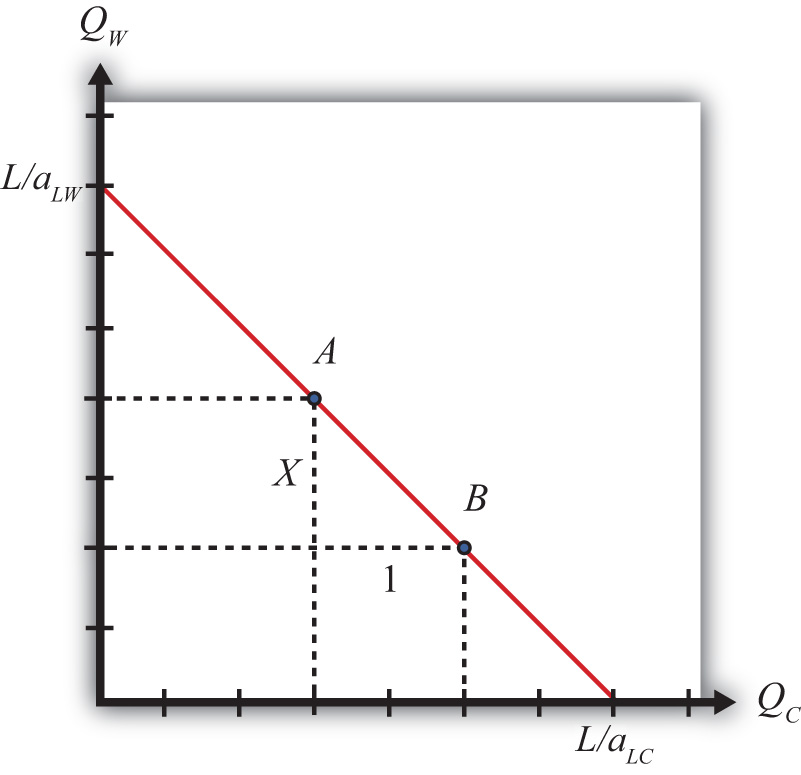

The basis for trade in the Ricardian model is differences in technology between countries. Below we define two different ways to describe technology differences. The first method, called absolute advantage, is the way most people understand technology differences. The second method, called comparative advantage, is a much more difficult concept. As a result, even those who learn about comparative advantage often will confuse it with absolute advantage. It is quite common to see misapplications of the principle of comparative advantage in newspaper and journal stories about trade. Many times authors write “comparative advantage” when in actuality they are describing absolute advantage. This misconception often leads to erroneous implications, such as a fear that technology advances in other countries will cause our country to lose its comparative advantage in everything. As will be shown, this is essentially impossible.
To define absolute advantage, it is useful to define labor productivity first. To define comparative advantage, it is useful to first define opportunity cost. Next, each of these is defined formally using the notation of the Ricardian model.
Labor productivityThe quantity of a good that can be produced per unit of labor input. It is the reciprocal of the unit labor requirement. is defined as the quantity of output that can be produced with a unit of labor. Since aLC represents hours of labor needed to produce one pound of cheese, its reciprocal, 1/aLC, represents the labor productivity of cheese production in the United States. Similarly, 1/aLW represents the labor productivity of wine production in the United States.
A country has an absolute advantageA country has an absolute advantage in the production of a good if it can produce the good at a lower labor cost and if labor productivity in the good is higher than in another country. in the production of a good relative to another country if it can produce the good at lower cost or with higher productivity. Absolute advantage compares industry productivities across countries. In this model, we would say the United States has an absolute advantage in cheese production relative to France if
or if
The first expression means that the United States uses fewer labor resources (hours of work) to produce a pound of cheese than does France. In other words, the resource cost of production is lower in the United States. The second expression means that labor productivity in cheese in the United States is greater than in France. Thus the United States generates more pounds of cheese per hour of work.
Obviously, if aLC∗ < aLC, then France has the absolute advantage in cheese. Also, if aLW < aLW∗, then the United States has the absolute advantage in wine production relative to France.
Opportunity costThe value or quantity of something that must be given up to obtain something else. In the Ricardian model, opportunity cost is the amount of a good that must be given up to produce one more unit of another good. is defined generally as the value of the next best opportunity. In the context of national production, the nation has opportunities to produce wine and cheese. If the nation wishes to produce more cheese, then because labor resources are scarce and fully employed, it is necessary to move labor out of wine production in order to increase cheese production. The loss in wine production necessary to produce more cheese represents the opportunity cost to the economy. The slope of the PPF, −(aLC/aLW), corresponds to the opportunity cost of production in the economy.
Figure 2.2 Defining Opportunity Cost
To see this more clearly, consider points A and B in Figure 2.2 "Defining Opportunity Cost". Let the horizontal distance between A and B be one pound of cheese. Label the vertical distance X. The distance X then represents the quantity of wine that must be given up to produce one additional pound of cheese when moving from point A to B. In other words, X is the opportunity cost of producing cheese.
Note also that the slope of the line between A and B is given by the formula
Thus the slope of the line between A and B is the opportunity cost, which from above is given by −(aLC/aLW). We can more clearly see why the slope of the PPF represents the opportunity cost by noting the units of this expression:
Thus the slope of the PPF expresses the number of gallons of wine that must be given up (hence the minus sign) to produce another pound of cheese. Hence it is the opportunity cost of cheese production (in terms of wine). The reciprocal of the slope, −(aLW/aLC), in turn represents the opportunity cost of wine production (in terms of cheese).
Since in the Ricardian model the PPF is linear, the opportunity cost is the same at all possible production points along the PPF. For this reason, the Ricardian model is sometimes referred to as a constant (opportunity) cost model.
A country has a comparative advantage in the production of a good if it can produce that good at a lower opportunity cost relative to another country. Thus the United States has a comparative advantage in cheese production relative to France if
This means that the United States must give up less wine to produce another pound of cheese than France must give up to produce another pound. It also means that the slope of the U.S. PPF is flatter than the slope of France’s PPF.
Starting with the inequality above, cross multiplication implies the following:
This means that France can produce wine at a lower opportunity cost than the United States. In other words, France has a comparative advantage in wine production. This also means that if the United States has a comparative advantage in one of the two goods, France must have the comparative advantage in the other good. It is not possible for one country to have the comparative advantage in both of the goods produced.
Suppose one country has an absolute advantage in the production of both goods. Even in this case, each country will have a comparative advantage in the production of one of the goods. For example, suppose aLC = 10, aLW = 2, aLC∗ = 20, and aLW∗ = 5. In this case, aLC (10) < aLC∗ (20) and aLW (2) < aLW∗ (5), so the United States has the absolute advantage in the production of both wine and cheese. However, it is also true that
so that France has the comparative advantage in cheese production relative to the United States.
Another way to describe comparative advantage is to look at the relative productivity advantages of a country. In the United States, the labor productivity in cheese is 1/10, while in France it is 1/20. This means that the U.S. productivity advantage in cheese is (1/10)/(1/20) = 2/1. Thus the United States is twice as productive as France in cheese production. In wine production, the U.S. advantage is (1/2)/(1/5) = (2.5)/1. This means the United States is two and one-half times as productive as France in wine production.
The comparative advantage good in the United States, then, is that good in which the United States enjoys the greatest productivity advantage: wine.
Also consider France’s perspective. Since the United States is two times as productive as France in cheese production, then France must be 1/2 times as productive as the United States in cheese. Similarly, France is 2/5 times as productive in wine as the United States. Since 1/2 > 2/5, France has a disadvantage in production of both goods. However, France’s disadvantage is smallest in cheese; therefore, France has a comparative advantage in cheese.
The only case in which neither country has a comparative advantage is when the opportunity costs are equal in both countries. In other words, when
then neither country has a comparative advantage. It would seem, however, that this is an unlikely occurrence.
Jeopardy Questions. As in the popular television game show, you are given an answer to a question and you must respond with the question. For example, if the answer is “a tax on imports,” then the correct question is “What is a tariff?”
Consider a Ricardian model with two countries, the United States and Ecuador, producing two goods, bananas and machines. Suppose the unit labor requirements are aLBUS= 8, aLBE = 4, aLMUS = 2, and aLME = 4. Assume the United States has 3,200 workers and Ecuador has 400 workers.
Consider a Ricardian model with two countries, England and Portugal, producing two goods, wine and corn. Suppose the unit labor requirements in wine production are aLWEng = 1/3 hour per liter and aLWPort = 1/2 hour per liter, while the unit labor requirements in corn are aLCEng = 1/4 hour per kilogram and aLCPort = 1/2 hour per kilogram.